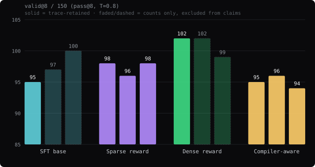

GLYPH
Post-training a 4B Rust coding agent
I built synthetic agent traces, fully fine-tuned Qwen3-4B, ran three verifier-RL experiments, and audited every result I could support. RL did not reliably beat SFT. The useful result was learning what likely constrained it.
1. What I built
GLYPH is a verifiers environment: it owns the Rust tasks, tool loop, and
rewards. PRIME-RL orchestrates rollouts and policy updates against that environment.
Each rollout edits a disposable Cargo crate and receives reward from real compiler,
test, or stdout results.
ASSISTANT CALL read_file {…} TOOL RESULT src/lib.rs ASSISTANT CALL apply_patch {…} ASSISTANT CALL cargo_test {…} TOOL RESULT 4 passed ASSISTANT FINAL: fixed and tested
That full conversation—not an isolated code patch—is the SFT training unit. The same ChatML renderer and tool runtime are used for data generation, RL, evaluation, and the TUI.
2. One qualitative OOD check
In the TUI, the trained agent solved score_summary: it read an independently
authored crate, patched score filtering and capping, ran four passing tests, and stopped with
FINAL. The exact task appears in neither training nor evaluation and was created
outside their generator.
This is one selected success, not a benchmark. Its aggregation and filtering concepts are adjacent to generator archetypes, so it is source-OOD rather than a clean unseen semantic family. Harder exploratory crates did not reach passing tests within their tool budgets, but those attempts were not a controlled retained evaluation. The demo therefore shows transfer to one new crate, not general Rust capability or a pretraining limit. crate and tests · reproduction
3. How I made the SFT data
A generator proposed structured JSON task specs: a buggy crate, intended edits, and expected
tool outcomes. A deterministic materializer built each crate and executed every step through
real Cargo. A case was kept only when planned failures failed and final fixes passed.
Compiler output in the dataset came from rustc, not the generator.
Full fine-tuning on those verified traces produced SFT_HALF_A_V8. It solved
95 of 150 held-out crates at valid@8 and learned the tool protocol almost
perfectly.
Holdout limit: training and evaluation used the same generator and shared task families. This tests new instances of known bug types, not unseen Rust problem classes. Next time I would reserve entire semantic families and independently authored tasks before generating training data.
4. The RL experiment
One SFT control. Three RL reward designs. One training run per RL arm.
valid@8 counts a crate when at least one of eight sampled rollouts reaches Cargo success and ends with one clean FINAL.
Sparse
Clean verifier success dominates; failed attempts receive coarse penalties.
Dense
Adds credit for compiling and for the fraction of tests passed.
Compiler-aware
Grades failed code by the furthest rustc phase reached.
| Model | Trace-retained | Counts only |
|---|---|---|
| SFT control | 95 | 97 / 100 |
| Sparse RLVR | 98 / 96 / 98 | — |
| Dense RLVR | 102 | 102 / 99 |
| Compiler-aware RLVR | 95 / 96 / 94 | — |

None of the differences is statistically reliable. Dense versus SFT was +7 prompts, but p≈0.12 when pairing the same prompts and p≈0.15 when related template families were grouped. Sparse was flat. Compiler-aware was level with SFT.
“Paired” means comparing both models on each same crate. “Family grouped” prevents many variants of one template from counting as independent evidence. Count-only repetitions remain visible for context, but are excluded from headline claims because their rollouts were not saved.
5. Inspect retained traces
Three selected RLVR rollouts. Optional evidence, not a representative sample.
6. What the evidence says
The protocol was already saturated
SFT had almost no formatting headroom. Sparse RLVR produced correct call syntax, IDs, and Cargo paths on all 150 greedy prompts; SFT did so on 149.
The hard tail likely needed Rust capability, not formatting
Greedy pass@1 changed only six outcomes: sparse RLVR fixed four SFT failures and lost two SFT successes, while 74 prompts failed both. The first retained pass@8 runs still shared 48 failures (+3 sparse, p≈0.55); the three-run aggregate means were both 97.3/150. Sparse RL did not measurably expand the solve frontier.
The reward often could not separate failures
At sparse step 0, 64 of 96 rollouts belonged to tied, zero-advantage groups and were filtered. Some failed rollouts compiled or passed tests, but the sparse reward barely distinguished that progress.
Supported hypothesis: the SFT checkpoint entered RL with too little probability
of producing successful trajectories on much of the hard tail. Sparse GRPO then received many
tied groups, while alternative reward shapes did not reliably turn partial progress into new
solutions. Reward shaping alone was insufficient on this fixed policy.
Unresolved cause: GLYPH did not run a matched base-model evaluation, so this
cannot distinguish limited Qwen3-4B pretraining or capacity, narrow synthetic SFT coverage, or
regression during full SFT or RL.
Local evidence: reproducible statistics · three-run sensitivity analysis · SFT greedy eval · sparse greedy eval · pass@8 metadata
7. The next experiment
Compare the base, SFT, and RL policies on both the same-family holdout and an independently authored general-Rust set. Because the raw base model was not trained on GLYPH's tool protocol, score Cargo/task success separately from clean trace formatting.
| Result | Evidence for |
|---|---|
| Base fails; SFT improves | SFT learned task capability |
| Base passes; SFT fails | Regression or forgetting |
| All fail | Base limitation remains plausible; targeted SFT still untested |
| SFT improves only same-family tasks | Specialization, not broad Rust transfer |
- Replace same-family examples with diverse, intermediate Rust traces at fixed dataset size.
- Rerun the same RL recipe to test whether the new SFT frontier reduces tied groups.
- Hold out entire semantic task families, not only case IDs.
- Train multiple seeded runs per reward arm.
- Use explicit, recorded evaluation seeds.
- Retain every rollout, command, environment, and model revision.
- Keep SFT, RL, evaluation, and demos byte-identical at the interface.
GLYPH did not establish an RL improvement. It established a working, auditable post-training stack and showed exactly where this experiment stopped being informative.